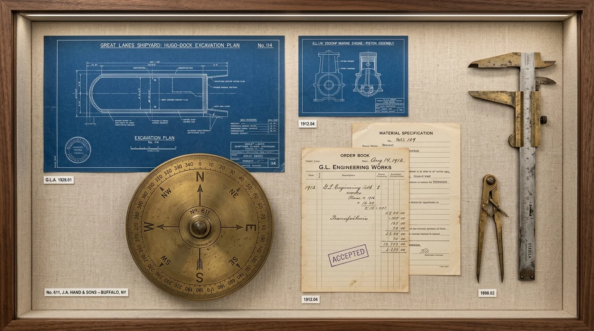

Industry remembered through the people who built it.
Institutional Ledger
The Great Lakes Industrial Archive operates as a dedicated regional archive collecting, conserving, and providing open research access to the documentary history of manufacturing workers, dockworkers, shipbuilders, and foundry communities.
Workplace portraits, factory floor series, shipyard construction, and municipal labor rallies.
Union charters, shift ledgers, equipment schematics, plant correspondence, and safety records.
Audio recordings, transcripts, and worker testimonies across maritime and manufacturing trades.
Tooling specimens, foundry patterns, safety badges, hand instruments, and manufactured parts.
Featured Archive Object
A preserved physical artifact from our permanent manufacturing holdings, conserved and cataloged in accordance with archival standards.

| ACCESSION GROUP | Great Lakes Manufacturing Heritage |
| OBJECT CLASSIFICATION | Physical Object Holding |
| ARCHIVE ESTABLISHED | 1987 |
Object accession number, donor attribution, and individual fabrication details are cataloged per accession protocol upon curator rotation.
Preservation Mission
The industrial transformation of the Great Lakes region was defined not simply by steel and machinery, but by the community of people whose labor built it. Our mission is to ensure that these primary historical records—fragile photographs, oral audio reels, and paper shift logs—are systematically preserved in archival conditions and made accessible to students, historians, and descendants.
Catalog Inquiry
Search the 28,100+ combined collection records across photographs, documents, oral audio records, and physical object registries.
Reading Room Appointment
Schedule an in-person research session to inspect primary non-circulating paper records and physical objects under archivist supervision.
Reproduction & Licensing
Request high-resolution digital scans and transcripts for academic, educational, civic exhibition, and publication purposes.
Conduct Archival Research
Contact the archive administration to schedule a reading room visit, deposit historical materials, or request remote research assistance.